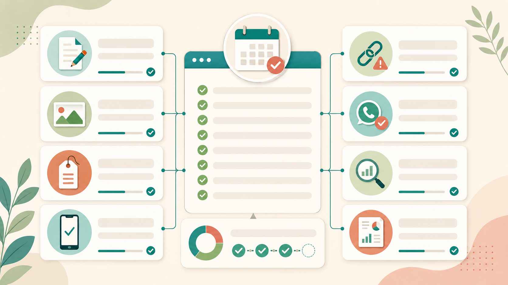

Quản lý website trọn gói cho cửa hàng nhỏ — từ 500.000đ/tháng
Website giống như mặt tiền online của một cửa hàng. Nếu thông tin cũ, ảnh lỗi, bảng giá sai hoặc nút liên hệ không hoạt động, khách có thể rời đi rất nhanh. Với cửa hàng nhỏ, quán cà phê, spa, shop hoặc dịch vụ địa phương, một website gọn gàng và được cập nhật thường xuyên giúp khách tin hơn trước khi gọi điện, nhắn Zalo hoặc ghé trực tiếp.
Duyên Lành Web cung cấp dịch vụ quản lý website trọn gói cho những chủ cửa hàng không có thời gian tự sửa nội dung, không muốn động vào code, nhưng vẫn muốn website luôn chỉn chu, đúng thông tin và hoạt động ổn định. Anh/chị chỉ cần gửi nội dung cần thay đổi, phần còn lại chúng tôi hỗ trợ cập nhật.
Vì sao cửa hàng nhỏ cần quản lý website hằng tháng?
Nhiều chủ cửa hàng nghĩ rằng làm website xong là đủ. Thực tế, sau vài tháng hoạt động, thông tin trên website rất dễ bị cũ: giá dịch vụ thay đổi, ảnh mới chưa cập nhật, giờ mở cửa khác trước, số điện thoại đổi, chương trình ưu đãi hết hạn nhưng vẫn còn hiển thị.
Những lỗi nhỏ này không làm website sập ngay, nhưng âm thầm làm giảm niềm tin. Khách nhìn thấy bảng giá cũ sẽ bối rối. Khách bấm nút gọi không được sẽ bỏ qua. Khách xem ảnh mờ, ảnh lỗi hoặc thông tin thiếu sẽ nghĩ cửa hàng không còn hoạt động tốt. Quản lý website định kỳ giúp tránh những “vết bụi số” như vậy.
Dịch vụ quản lý website gồm những gì?
Gói quản lý website của Duyên Lành Web tập trung vào những việc thực tế mà cửa hàng nhỏ thường cần nhất. Không vẽ thêm kỹ thuật rườm rà, không biến website thành cỗ máy khó hiểu.
- Cập nhật nội dung: thay đổi giới thiệu, bảng giá, menu, dịch vụ, thông tin liên hệ, giờ mở cửa.
- Thay hình ảnh: cập nhật ảnh sản phẩm, ảnh không gian quán, ảnh dịch vụ, ảnh nhân sự hoặc ảnh chương trình mới.
- Đăng bài viết mới: đưa bài tư vấn, bài SEO cơ bản hoặc thông báo mới lên website.
- Kiểm tra nút liên hệ: đảm bảo nút gọi, Zalo, email, form liên hệ hoạt động đúng.
- Sửa lỗi hiển thị nhỏ: lỗi tràn chữ, sai khoảng cách, lỗi ảnh, lỗi hiển thị trên điện thoại.
- Kiểm tra định kỳ: xem website còn truy cập được không, ảnh có tải được không, link quan trọng có lỗi không.
- Báo cáo ngắn: thông báo những phần đã cập nhật và các điểm nên cải thiện nếu có.
Quản lý website phù hợp với ai?
Dịch vụ này phù hợp nhất với những mô hình kinh doanh nhỏ nhưng cần hình ảnh online tử tế. Đặc biệt là các cửa hàng đã có website nhưng không có nhân sự riêng để cập nhật thường xuyên.
Một số nhóm phù hợp:
- Quán cà phê cần cập nhật menu, hình ảnh không gian, chương trình mới.
- Spa, salon, tiệm tóc cần thay bảng giá, ảnh dịch vụ và thông tin đặt lịch.
- Shop nhỏ cần thêm sản phẩm, bộ sưu tập, hình ảnh hoặc thông báo khuyến mãi.
- Dịch vụ địa phương cần cập nhật bài viết, khu vực phục vụ và thông tin liên hệ.
- Doanh nghiệp nhỏ muốn website luôn gọn gàng nhưng không muốn thuê nhân sự kỹ thuật riêng.
Bảng giá quản lý website
Với website tĩnh hoặc website giới thiệu đơn giản, chi phí quản lý không cần quá cao. Duyên Lành Web đặt mức giá dễ tiếp cận để cửa hàng nhỏ có thể duy trì website lâu dài mà không bị áp lực.
Mức 500.000đ/tháng phù hợp với phần lớn website giới thiệu cho cửa hàng nhỏ. Nếu website có nhiều nội dung cần cập nhật, nhiều bài viết hoặc yêu cầu chỉnh sửa thường xuyên, chi phí sẽ được tư vấn rõ trước khi làm.

Quản lý website khác gì với thiết kế website?
Thiết kế website là giai đoạn xây dựng ban đầu: tạo giao diện, bố cục, trang chủ, trang dịch vụ, liên hệ và các phần cần thiết để website đi vào hoạt động. Còn quản lý website là giai đoạn chăm sóc sau đó, giúp website không bị cũ, không bị bỏ quên và luôn giữ hình ảnh chuyên nghiệp.
Có thể hiểu đơn giản: thiết kế website là dựng cửa hàng online, còn quản lý website là lau kính, thay bảng giá, sắp lại kệ hàng và mở đèn mỗi ngày. Làm tốt phần sau, khách bước vào sẽ thấy mọi thứ còn sống, còn mới, còn đáng tin.
Quản lý website có hỗ trợ SEO không?
Có, nhưng ở mức nền tảng và thực tế. Khi cập nhật bài viết hoặc nội dung mới, Duyên Lành Web có thể hỗ trợ tiêu đề rõ ràng, mô tả ngắn, heading hợp lý, alt ảnh tự nhiên và liên kết nội bộ phù hợp. Đây là những việc nhỏ nhưng rất cần cho một website muốn được Google hiểu tốt hơn.
Nếu anh/chị cần tối ưu sâu hơn về từ khóa, Google Search Console, sitemap hoặc SEO địa phương, có thể xem thêm dịch vụ SEO website cơ bản hoặc bài viết về SEO địa phương cho cửa hàng nhỏ.
Quy trình quản lý website tại Duyên Lành Web
- Tiếp nhận yêu cầu: anh/chị gửi nội dung cần sửa qua Zalo, email hoặc file ghi chú.
- Kiểm tra nội dung: chúng tôi xem phần nào cần cập nhật, ảnh có đúng kích thước chưa, có cần chỉnh câu chữ không.
- Thực hiện cập nhật: sửa nội dung, thay hình, thêm bài viết hoặc điều chỉnh các phần nhỏ trên website.
- Kiểm tra lại: xem trên desktop và điện thoại, kiểm tra link, ảnh và nút liên hệ.
- Báo lại kết quả: gửi anh/chị xem lại và ghi nhận phần cần chỉnh tiếp nếu có.
Khi nào nên thuê quản lý website?
Anh/chị nên thuê người quản lý website khi thường xuyên có thông tin mới nhưng không có thời gian tự cập nhật. Ví dụ: đổi giá dịch vụ, thêm ảnh mới, có chương trình ưu đãi, muốn đăng bài SEO, hoặc cần kiểm tra website sau một thời gian không động tới.
Đặc biệt, nếu website là nơi khách xem thông tin trước khi quyết định liên hệ, việc để nội dung cũ quá lâu sẽ khiến website giống một tấm biển đã bạc màu. Không hỏng hẳn, nhưng khó tạo niềm tin.
Câu hỏi thường gặp
Quản lý website trọn gói gồm những việc gì?
Dịch vụ thường gồm cập nhật nội dung, hình ảnh, bảng giá, thông tin liên hệ, bài viết mới, kiểm tra lỗi hiển thị, kiểm tra nút gọi/Zalo và báo lại tình trạng website sau khi sửa.
Chi phí quản lý website là bao nhiêu?
Gói cơ bản tại Duyên Lành Web bắt đầu từ 500.000đ/tháng, phù hợp với website giới thiệu, website cửa hàng nhỏ, quán cà phê, spa, shop hoặc dịch vụ địa phương.
Website tĩnh có cần quản lý hằng tháng không?
Có. Website tĩnh ít lỗi kỹ thuật hơn nhưng vẫn cần cập nhật nội dung, hình ảnh, bảng giá, thông tin liên hệ, bài viết và kiểm tra định kỳ để tránh thông tin cũ làm mất khách.
Tôi có thể tự quản lý website không?
Có thể. Nhưng nếu anh/chị không quen chỉnh nội dung, sợ làm hỏng bố cục hoặc quá bận kinh doanh, thuê dịch vụ quản lý website sẽ tiết kiệm thời gian và an toàn hơn.
Có cần ký hợp đồng dài hạn không?
Với gói cơ bản, Duyên Lành Web hướng đến sự linh hoạt cho cửa hàng nhỏ. Anh/chị có thể trao đổi nhu cầu trước, làm theo tháng và không phải bắt đầu bằng một cam kết nặng nề.
Bạn muốn website luôn gọn gàng và đúng thông tin?
Duyên Lành Web có thể giúp anh/chị cập nhật nội dung, hình ảnh, bảng giá và kiểm tra website hằng tháng, để website không bị bỏ quên sau khi làm xong.